Basics
Modulation is the process of changing parameters over time using a control signal.
Modular synthesis uses a signal modulator to change different aspects of another carrier signal like amplitude, frequency or timbre/tone color.
Good question to ask is: which principle of modulation is used in this step?
Basic terminology
Audio-Rate
Audio Rate are frequencies that lie within the range of human hearing. This range get's used in synthesizer to create notes and sounds. The range lies between 20Hz and 20kHz. Note A4 -> 440Hz
Modulation
Using a signal(the modulator) to affect/change another signal (the carrier). Some types of modulation are: - frequency modulation - amplitude modulation - phase modulation - ring modulation - pulse with modulation
Voltage span
All Eurorack/VCVrack modules work with Voltage in a maximum value span of 10 Volt. - -5V to 5V - 0 to 10V - 0 to 1V
Amplitude
Level/strength of an audio or control voltage(CV) signal. For audio the amplitude controls the loudness of a sound.
For control voltage signal(CV) the amplitude controls the intensity of modulation that gets applied to a signal.
Frequency
Frequency is the rate a signal oscillates. Measured in Hertz(hz).
Mainly used to control the pitch of a tone although it can control many aspect of a module. E.g. can be used to control the cutoff frequency of a filter.
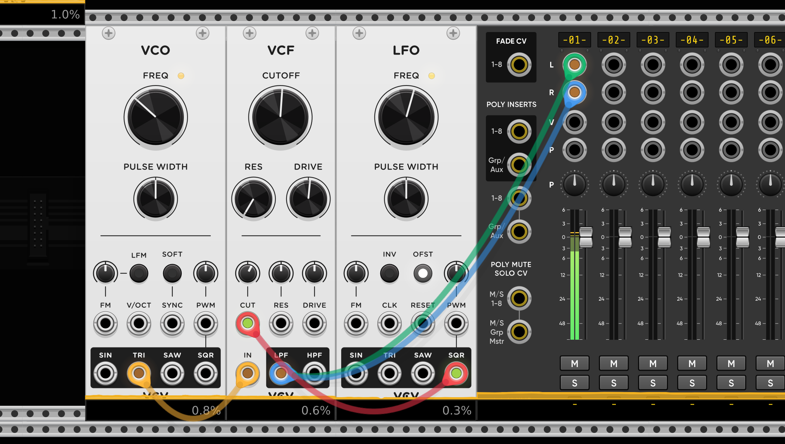
Control Voltage(CV)
Control Voltage is one of the fundamentals of modular synthesis. It allows the communication between the modules. With the CV signal we can control and manipulate parameters of the modular like pitch, frequency, filter cutoff, amplitude, etc.
All patch cables carry the same type of signal — a floating-point audio-rate signal(44.1 kHz or 48.kHz) — regardless of whether it’s being used for audio or “control voltage” duties. Conceptually, this represents a continuous voltage(a smooth signal without steps) that can vary over time, measured (in the virtual domain) in volts.
The modification of parameters by the control voltage is called modulation.
The CV signal can be unipolar or bipolar.
Clock
The clock signal is a steady stream of triggers/pulses which are used to synchronize other modules. The synchronizing is essential to produce precise and complex rhythms and patterns that align with tempo.
To create a clock signal there are a lot of clock modules available.
The clock signal doesn't have to mean the speed of something in your patch. In sequencers often a clock signal means go one step further/next order of operation.
Instead of using a clock module we also can create clock signals with for example an LFO with a SQRT wave.
Variable clock
To create a variable clock we can manipulate the frequency of an LFO with another LFO
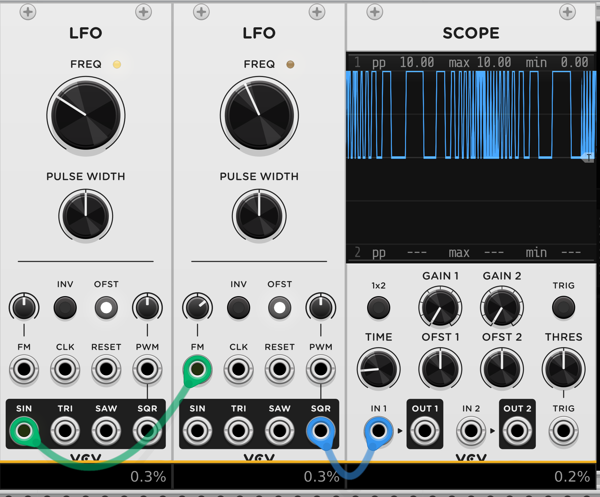
Triggers and Gates
Trigger and Gate signals get used to control the timing of events like:
- Turning modules active/inactive
- Initiating envelopes
- Synchronizing modules
Both have HIGH and LOW voltage states.
Trigger
Short burst signal of voltage that goes HIGH and directly goes back to LOW state - so no real ON phase.
Triggers get used for example for envelopes that control percussive sounds which lack sustain phase.
Gate
Gates are longer, sustained signals that stay HIGH for a period of time before returning to LOW. This could be a note playing for example.
Voltage signal that is used to control the duration of an event.
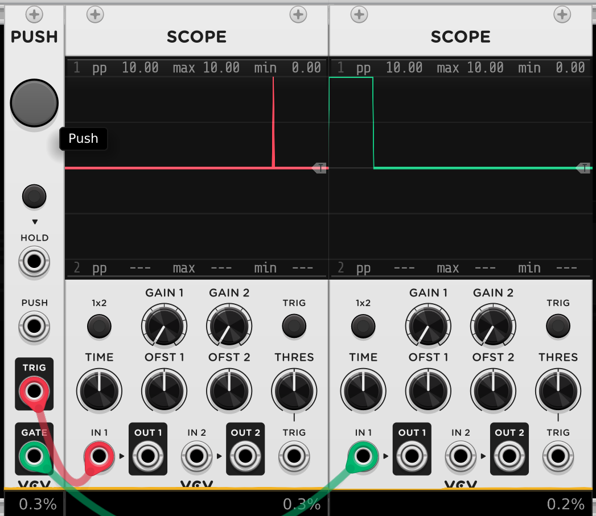
Gate signals are used to control the on/off state of modules and voices that require long note lengths.
LFO
A Low Frequency Oscillator generates a low frequency waveform that is typically used to modulate other modules. We can think of them like the invisible hands that manipulate certain values. The typical waveforms available in an LFO are the four fundamental wave-forms sine, triangle, sawtooth and square. The output of a LFO is a control voltage that we can use for modulation.
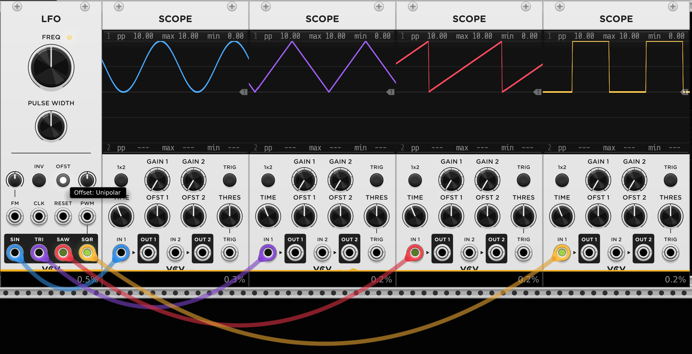
With a Square signal of a LFO we also can create a Gate signal behavior.
The pulse width defines how long the HIGH/ON signal of the gate is.
So LFO can work like analog Clock/Gate/Trigger signals.
Four fundamental waveforms
Sine, triangle, sawtooth and square are the four fundamental waves that are commonly used in modular.
The shape of the wave decides what harmonics the wave creates.j - The smoother the wave the less or no harmonics. - The sharper the wave the more harmonics.
The sharper corners or jumps of the signals create extra vibrations at multiples of the base frequency -> these are the harmonics.
Sine
Sine wave is smooth and creates a mellow and clean tone. It can be used to create subbass sounds or soft melodies.
Because the values of the sine-waves are smooth there are no additional harmonics.
Triangle
A triangle wave moves linear on rise and fall. It creates the fundamental frequency plus odd harmonics which diminish quickly.
Triangle waves create a brighter sound.
Square
Square waves move between HIGH and LOW values with a sharp edge/transition between them.
Square waves contain their fundamental frequency and all odd harmonics.
Square waves are good for aggressive voices.
Sawtooth
The sawtooth wave rises linearly and falls abruptly. It contains even and odd harmonics which creates a buzzy sounds.
They are great to create string and brass sounds.
VCO
Voltage Controlled Oscillator generate audio-frequency signal that can create wide range of sounds. It creates a continuously running tone. To shape it into a single sound we can create a substractive synthesizer voice
Bipolar
A control voltage signal that can have positive and negative values. For example a LFO signal with its center at 0V and its peaks and troths at 5. and -5V.
Unipolar
Control voltage signal that is only positive. Usually in between 0 and max 10V.
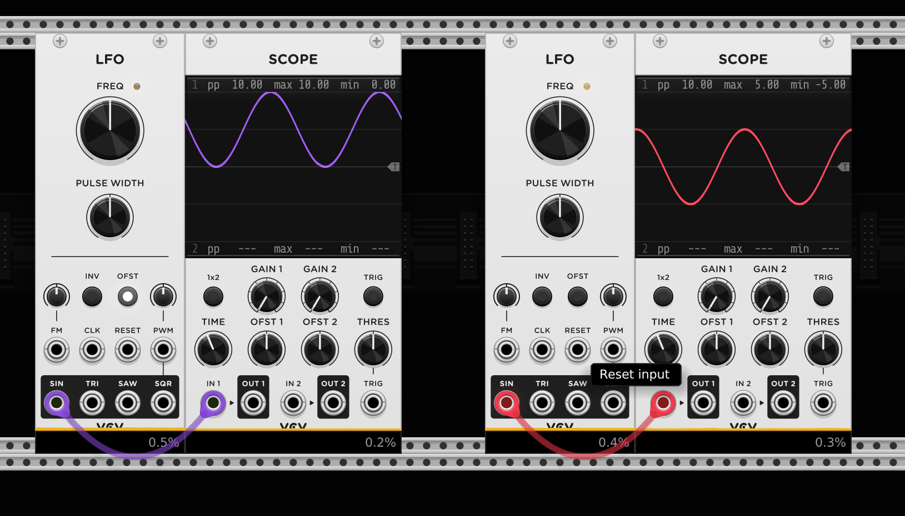
Envelope Generator
Envelope generator can shape the amplitude or the timbre of a sound over time. Most commonly used is ADSR. ADSR stands for Attack,Decay,Sustain and Release. Other envelopes are AR, ADR or AD which have less stages as the ADSR.
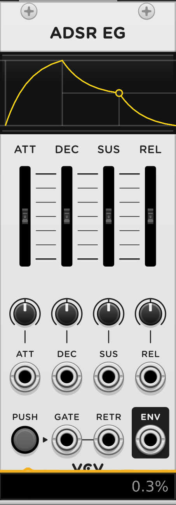
A gate signal triggers the envelope to start and it stays in the sustain phase as long as the signal is HIGH.
V/OCT
Volt per Octave is a standard way of controlling musical pitch with voltage where: - one octave equals 1 volt difference. Going from C4 to c5 requires 1 volt increase. - one semitone equals 1/12 volt(approximately 0.0833 volts). A semitone is the smallest step between notes in Western music. Each semitone requires adding or subtracting 0.0833 Volts.
VCA
A Voltage Controlled Amplifier allows a CV signal to control the amplitude of an audio signal. This works similar to a volume control which can be modified by for example a LFO signal.
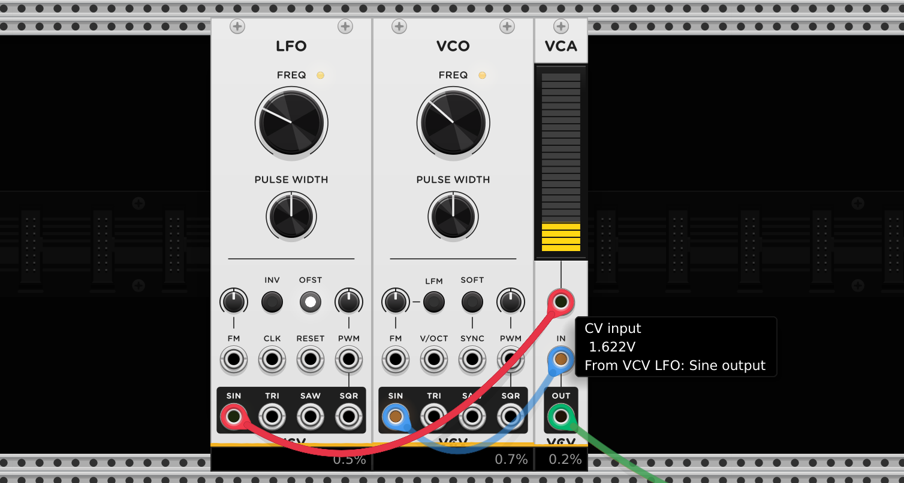
VCF
Voltage Controlled Filter allows a CV signal to control the frequency response of an audio signal that passes through module.
The typical filter are: - low-pass - band-pass - high-pass
We use filter for emphasis or reduction of certain frequencies in a sound/signal.
Subtractive Synthesizer Voice
To create a subtractive synth voice patch we use other modules to subtract parts of the source signal. For example we can use Envelope or Filter modules to effect the output signal of a VCO.
The first thing you want to subtract from a continuous sound is volume information with a VCA to control the amplitude and an ADSR envelope(Envelope Generator) to control the shape of the signal that controls the amplitude.
In the VCA we have to plug in a control voltage signal that shapes our volume. For that we use the ADSR. It needs to be triggered so the envelope gets executed. For ADSR we use most of the time a gate signal.
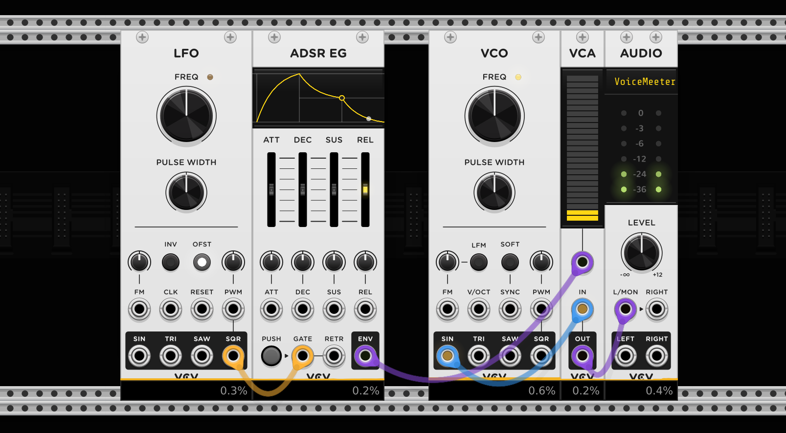
With filter we can further manipulate our signal. For that we can use a VCF with a low-pass or high-pass filter. Often filter have their own envelopes to control the cutoff.
Most of the modules have knobs to manipulate different parameters of the module itself. They are called Attenuverter. They control how much modulation/how strong the effect of the CV should affect the parameter of the module.
Sequencer
A sequencer generates a sequence of voltages or events like triggers that allow to control pitches or modulation.
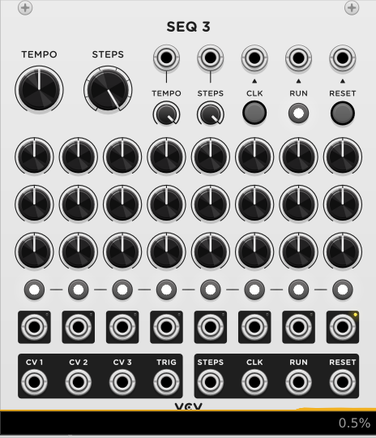
Something happens over time and that create events.
With a CLK input we can let the sequencer go one step further per input signal.
Gate Sequencer
With a Gate Sequencer we can create rhythmic patterns where on each CLK input signal there will be outputted a signal or not.
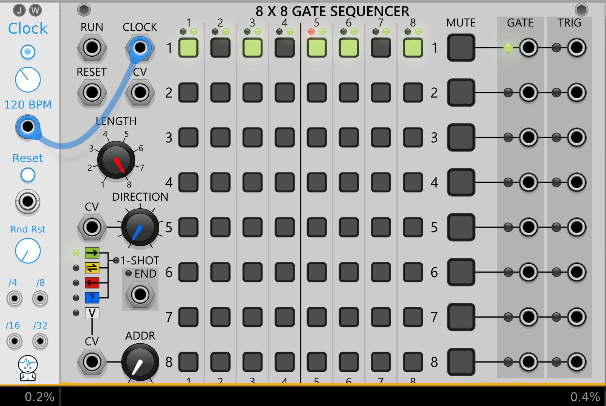
Polymeter
A polymeter is the use of different rhythmic cycles that run independently and that doesn't repeat at the same time. We can create a polymeter by giving two sequencers the same CLK input and give each sequencer a different amount of steps.
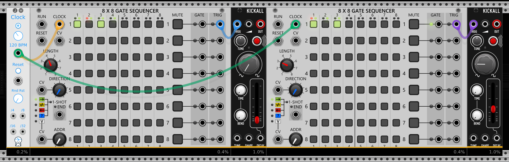
For example the left sequencer goes over 4 steps (4/4) and the right goes over 3 (3/4).